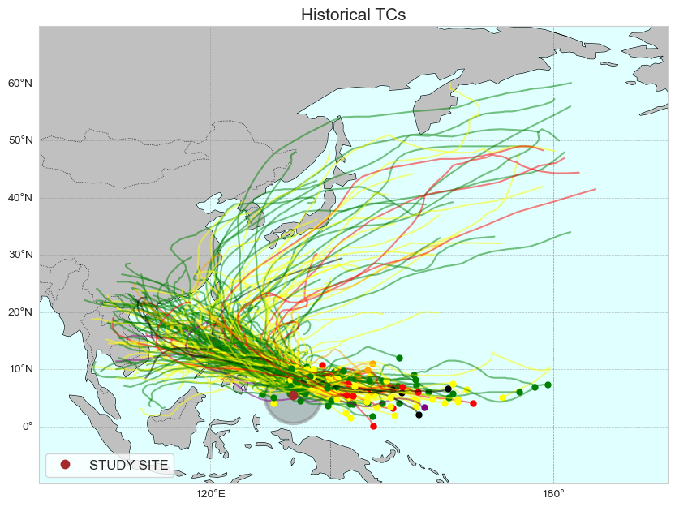
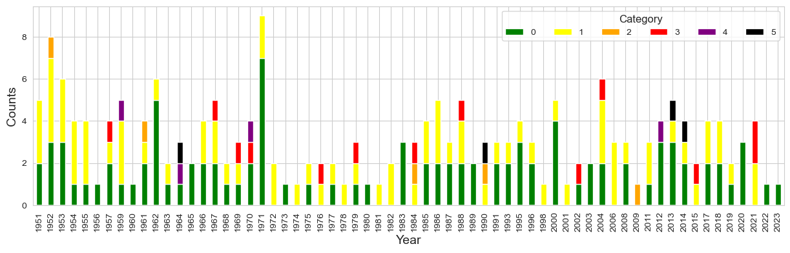
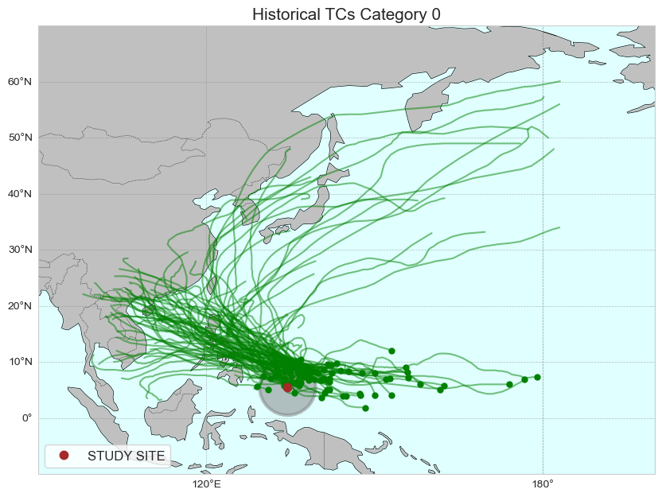
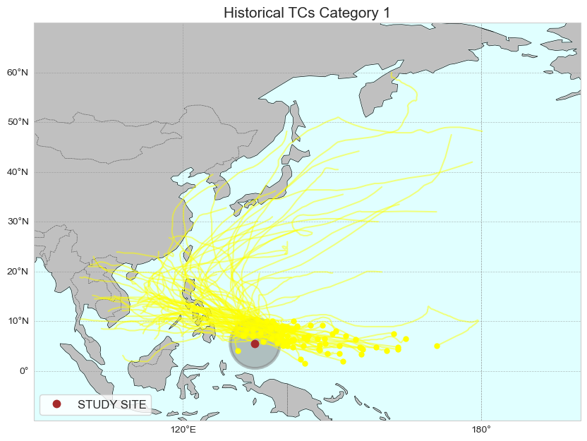
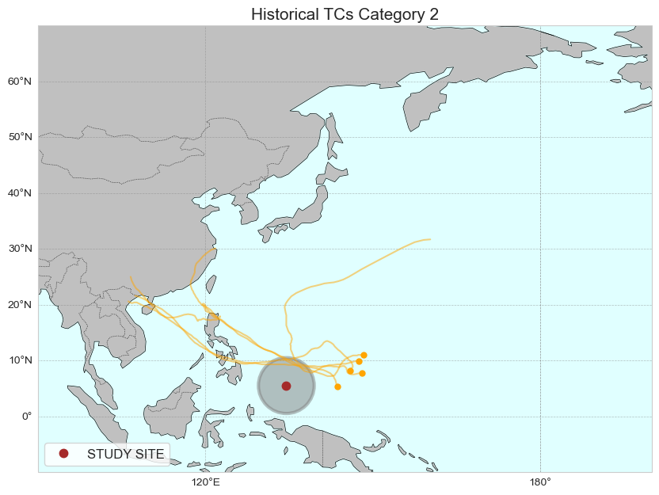
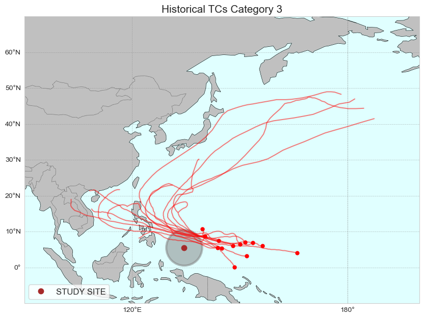
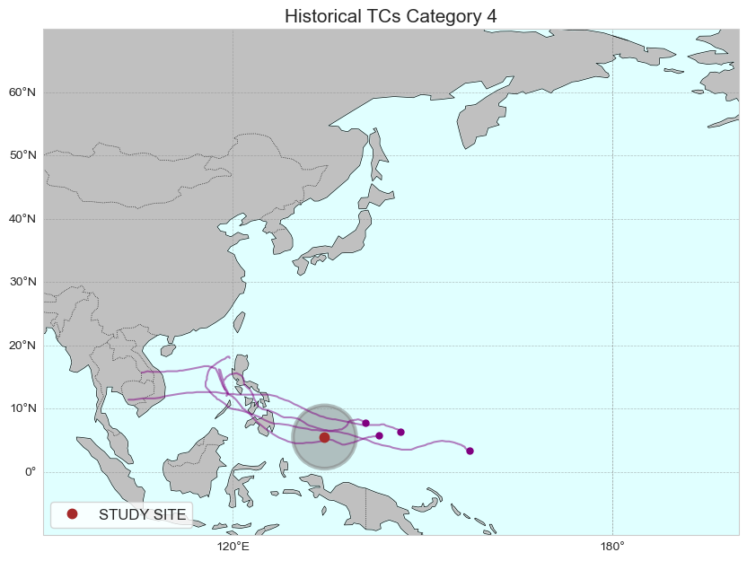
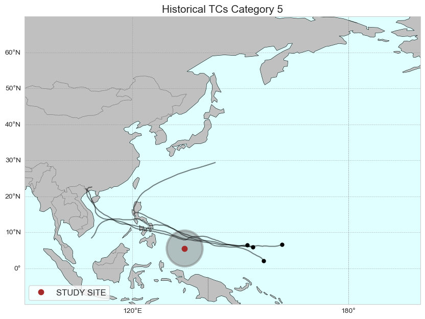

TC Analysis#
import warnings
warnings.filterwarnings("ignore")
import sys
import xarray as xr
import requests
from io import BytesIO
import numpy as np
sys.path.append("../../../functions")
from tcs import Extract_Circle
from data_downloaders import download_ibtracs
sys.path.append("../../../../indicators_setup")
from ind_setup.plotting_tcs import Plot_TCs_HistoricalTracks_Category
from ind_setup.plotting import plot_bar_probs
lon_lat = [134.5, 5.5] #Palau location lon, lat
basin = 'WP'
r1 = 5 # Radius of the circular area in degrees
Get Data#
update_data = False
path_data = "../../../data"
if update_data:
url = 'https://www.ncei.noaa.gov/data/international-best-track-archive-for-climate-stewardship-ibtracs/v04r01/access/netcdf/IBTrACS.ALL.v04r01.nc'
tcs = download_ibtracs(url, basin = basin)
tcs.to_netcdf(f"{path_data}/tcs_{basin}.nc")
else:
tcs = xr.load_dataset(f"{path_data}/tcs_{basin}.nc")
d_vns = {
'longitude': 'lon',
'latitude': 'lat',
'time': 'time',
'pressure': 'wmo_pres',
}
tcs_sel, tcs_sel_params = Extract_Circle(tcs, lon_lat[0], lon_lat[1], r1, d_vns)
lon1, lon2 = 90, 200
lat1, lat2 = -10, 70
# r1
ax = Plot_TCs_HistoricalTracks_Category(
tcs_sel, tcs_sel_params.category,
lon1, lon2, lat1, lat2,
lon_lat[0], lon_lat[1], r1,
)

Count TCs by category#
u, c = np.unique(tcs_sel_params.category, return_counts=True)
import matplotlib.pyplot as plt
fig, ax = plt.subplots(1, figsize=(10, 4))
ax.grid(zorder = -1)
tcs_sel_params.category.plot.hist(bins=range(7), ax=ax, color='plum', alpha=0.5, edgecolor= None, width = .8, linewidth=1, label = 'All TCs')
tcs_sel_params.where(tcs_sel_params.dmin_date.dt.year >=1979,
drop = True).category.plot.hist(bins=range(7), ax=ax,
color='darkmagenta', alpha=0.5, edgecolor='crimson', width = .8, linewidth=1, label = 'TCs after 1979')
ax.set_xlabel('Category')
ax.set_ylabel('Counts')
ax.legend()
<matplotlib.legend.Legend at 0x17ddae1e0>
fig, ax = plt.subplots(1, figsize=(15, 4))
df_tcs = tcs_sel_params.to_dataframe()
df_tcs['year'] = df_tcs.dmin_date.dt.year
df_tcs.groupby('year').category.value_counts().unstack().plot(ax = ax, kind = 'bar', stacked = True, color = ['green', 'yellow', 'orange', 'red', 'purple', 'black'])
ax.set_ylabel('Counts', fontsize = 14)
ax.set_xlabel('Year', fontsize = 14)
ax.legend(ncols = 6).set_title('Category', prop = {'size': 12})

time = tcs_sel_params.dmin_date.dt.year.values
u, cu = np.unique(time, return_counts=True)
plot_bar_probs(x = u, y = cu, figsize= (15, 4), trendline = True,
y_label = 'Number TCs')
<Axes: ylabel='Number TCs'>
tcs_sel_severe_params = tcs_sel_params.where(tcs_sel_params.category >=3, drop = True)
time = tcs_sel_severe_params.dmin_date.dt.year.values
u, cu = np.unique(time, return_counts=True)
plot_bar_probs(x = u, y = cu, figsize= (15, 4), trendline = True,
y_label = 'Number of severe TCs')
<Axes: ylabel='Number of severe TCs'>
tcs_sel_severe_params
<xarray.Dataset> Size: 2kB
Dimensions: (storm: 21)
Coordinates:
* storm (storm) int64 168B 1764 1862 2088 2090 ... 3833 4019 4044
Data variables:
pressure_min (storm) float32 84B 960.0 935.0 940.0 ... 960.0 950.0 955.0
pressure_mean (storm) float32 84B 960.0 945.7 982.5 ... 970.0 987.4 976.7
velocity_mean (storm) float64 168B 27.52 19.12 13.97 ... 16.21 9.732 23.44
gamma (storm) float64 168B 124.0 104.8 89.45 ... 107.8 110.7 106.9
delta (storm) float64 168B 46.0 63.32 58.26 ... 38.45 70.2 78.89
category (storm) float64 168B 3.0 4.0 4.0 5.0 3.0 ... 5.0 3.0 3.0 3.0
dmin_date (storm) datetime64[ns] 168B 1957-01-24 ... 2021-12-14T06:0...
last_date (storm) datetime64[ns] 168B 1957-01-30T12:00:00 ... 2021-1...
index_in (storm) float64 168B 21.0 21.0 8.0 18.0 ... 31.0 10.0 17.0
index_out (storm) float64 168B 22.0 35.0 31.0 27.0 ... 37.0 41.0 30.0
Attributes:
point_lon: 134.5
point_lat: 5.5
point_r: 5for category in range(6):
tcs_cat = tcs_sel.where(tcs_sel_params.category == category, drop = True)
tcs_cat_params = tcs_sel_params.where(tcs_sel_params.category == category, drop = True)
# r1
ax = Plot_TCs_HistoricalTracks_Category(
tcs_cat, tcs_cat_params.category,
lon1, lon2, lat1, lat2,
lon_lat[0], lon_lat[1], r1,
)
ax.set_title(f'Historical TCs Category {category}', fontsize=15)





